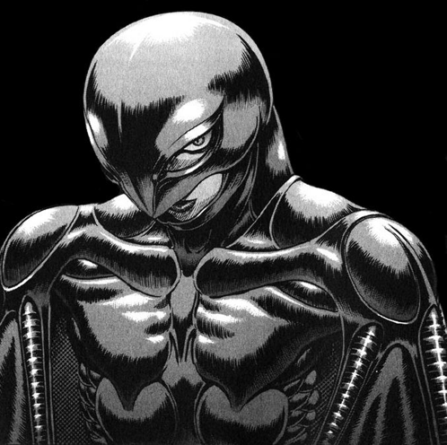

Griffith
Alias: Femto
Role: Leader of the Band of the Hawk
Personality: Charismatic, ambitious, and calculating
Background: Griffith is a brilliant military commander who seeks to achieve his dream of ruling a kingdom at any cost.

Guts
Alias: The Black Swordsman
Role: Former member of the Band of the Hawk
Personality: Fierce, determined, and loyal
Background: Guts is a wandering mercenary who becomes Griffith’s closest ally, but later his greatest enemy, driven by vengeance and survival.
Casca
Alias: Captain of the Hawks
Role: Second-in-command of the Band of the Hawk
Personality: Brave, caring, and conflicted
Background: Casca is a skilled warrior devoted to Griffith, but deeply connected to Guts. Her loyalty and struggles play a central role in the Band’s fate.